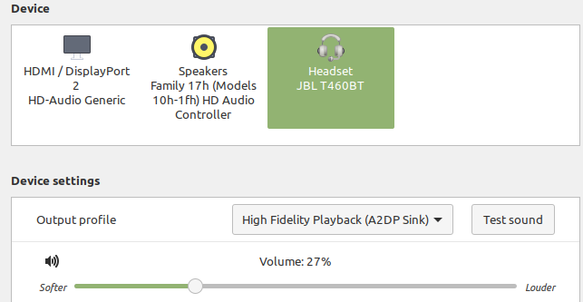
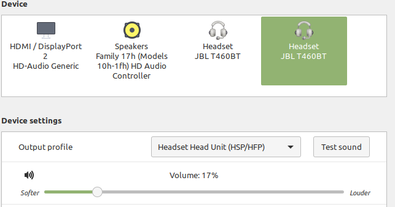

Pulseaudio
Sometimes due to skype or some apps on linux pulseaudio is crashing and then is problem with connecting wireless headset. In this case it isn’t possible to set a output profile High Fidelity Plaback (A2DP Sink)
In sound manager it should be visible like here:
Otherwise when quality is very poor it is set as here:
Problem occurs when it is unable to switch back to A2DP Sink and in dmesg are visible errors like here:
[21919.890181] Bluetooth: hci0: SCO packet for unknown connection handle 0
[21919.890183] Bluetooth: hci0: SCO packet for unknown connection handle 0
[21919.900028] Bluetooth: hci0: SCO packet for unknown connection handle 0
[21919.900034] Bluetooth: hci0: SCO packet for unknown connection handle 0
[21919.900036] Bluetooth: hci0: SCO packet for unknown connection handle 0
[21919.900037] Bluetooth: hci0: SCO packet for unknown connection handle 0
[21919.900038] Bluetooth: hci0: SCO packet for unknown connection handle 0
[21919.900040] Bluetooth: hci0: SCO packet for unknown connection handle 0
To solve this problem you can restart pulseaudio service
Restart pulseaudio
Check pulseaudio status
pulseaudio --check
It normally prints no output, just exit code. 0 means running. Mine were not running, so I just advanced to step Start pulseaudio daemon .
Kill running pulseaudio daemon
pulseaudio -k
Start pulseaudio daemon
pulseaudio -D